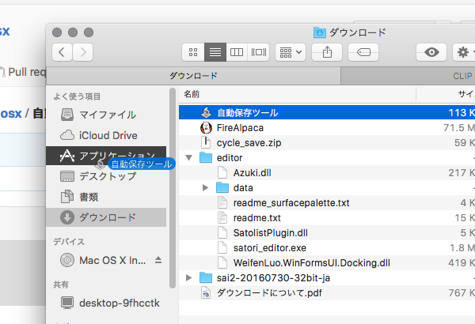
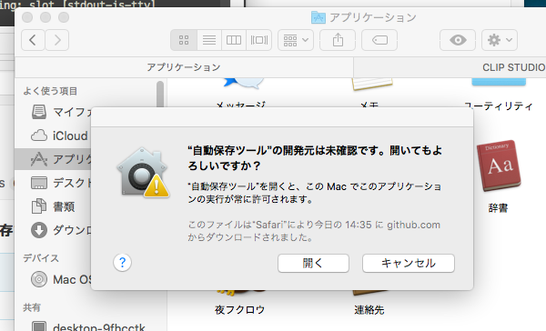
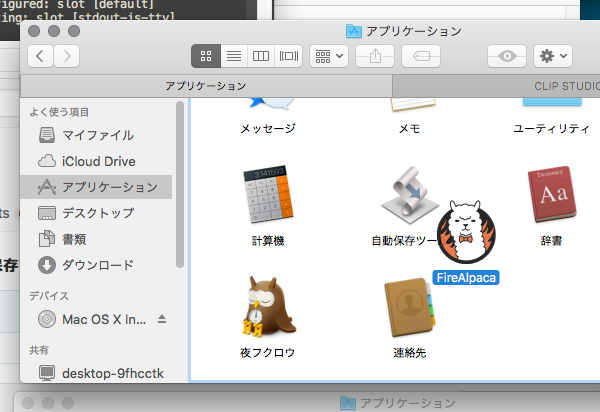
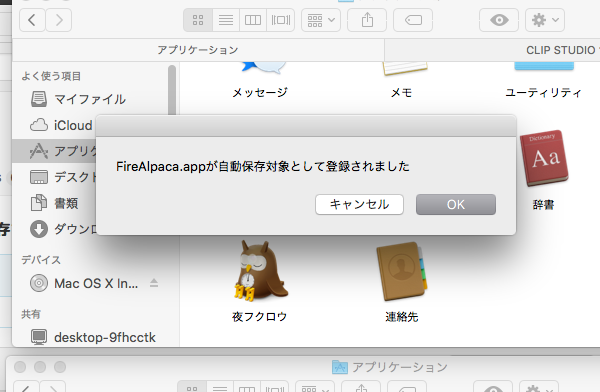
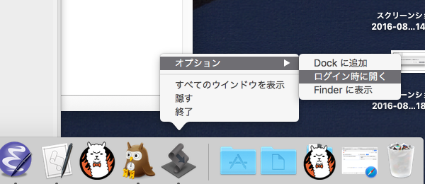

自動保存ツール Mac OS X用
お絵かき自動保存ツールのMac OS X版です。Windows版はこちら 自動保存して欲しいアプリをドラッグ・アンド・ドロップで登録できます。 登録されたアプリがアクティブのとき10分間隔で⌘Sを送信します。 なのでお絵かき関係なく⌘Sで保存される全てのアプリに使うことが出来ます。 利用規約を読んで同意できた方のみご使用ください。
使い方
基本的にダブルクリックして起動するだけですが、自動保存対象のアプリケーションを登録する作業が最初に必要です。
Finderでダウンロードフォルダを開き、自動保存ツールをアプリケーションに移動してください
アプリケーションフォルダを開き、自動保存ツールをダブルクリックして起動します。
このとき「“自動保存ツール”は、開発元が未確認のため開けません」というダイアログが出ることがあります。
その場合、自動保存ツールをCtrl+クリック(もしくは右クリック)して開くを選択→出てきたダイアログで開くを選択してください。
次に、自動保存してほしいアプリを登録します。
方法は簡単です。登録したいアプリのアイコンを自動保存ツールのアイコンにドラッグ・アンド・ドロップしてください。

登録されましたと言うダイアログが出れば登録成功です。

同じアプリをもう一度ドラッグ・アンド・ドロップすると今度は登録が解除されます。使ってみて気に入ったらDockにある自動保存ツールのアイコンをCtrl+クリック(もしくは右クリック)してオプション→ログイン時に開くを選択すると、自動保存ツールがログインした時に起動されるようになるので便利です。
いらなくなったら自動保存ツールをそのままゴミ箱に捨ててしまいましょう。
再ダウンロードしても設定は残っていないのでお気をつけて。
利用規約
NYSL Version 0.9982
A. 本ソフトウェアは Everyone’sWare です。このソフトを手にした一人一人が、 ご自分の作ったものを扱うのと同じように、自由に利用することが出来ます。
A-1. フリーウェアです。作者からは使用料等を要求しません。
A-2. 有料無料や媒体の如何を問わず、自由に転載・再配布できます。
A-3. いかなる種類の 改変・他プログラムでの利用 を行っても構いません。
A-4. 変更したものや部分的に使用したものは、あなたのものになります。
公開する場合は、あなたの名前の下で行って下さい。
B. このソフトを利用することによって生じた損害等について、作者は 責任を負わないものとします。各自の責任においてご利用下さい。
C. 著作者人格権は あやちぎん に帰属します。著作権は放棄します。
D. 以上の３項は、ソース・実行バイナリの双方に適用されます。
NYSL Version 0.9982 (en) (Unofficial)
A. This software is “Everyone’sWare”. It means: Anybody who has this software can use it as if he/she is the author.
A-1. Freeware. No fee is required.
A-2. You can freely redistribute this software.
A-3. You can freely modify this software. And the source
may be used in any software with no limitation.
A-4. When you release a modified version to public, you
must publish it with your name.
B. The author is not responsible for any kind of damages or loss while using or misusing this software, which is distributed “AS IS”. No warranty of any kind is expressed or implied. You use AT YOUR OWN RISK.
C. Copyrighted to (Ayachi Gin)
D. Above three clauses are applied both to source and binary form of this software.
ソースコード
Githubで公開してます。